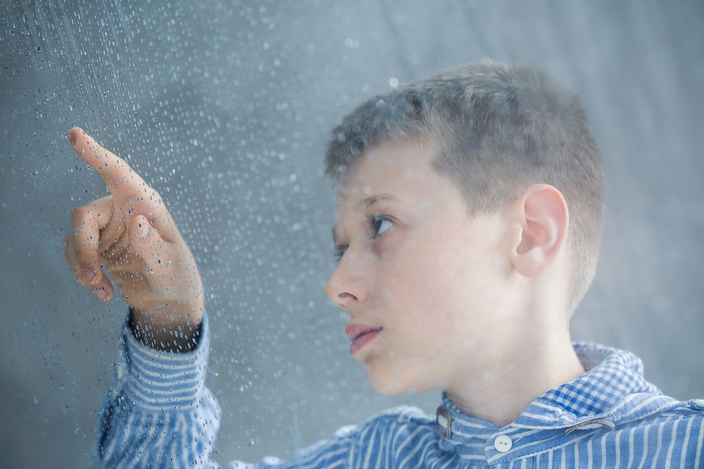
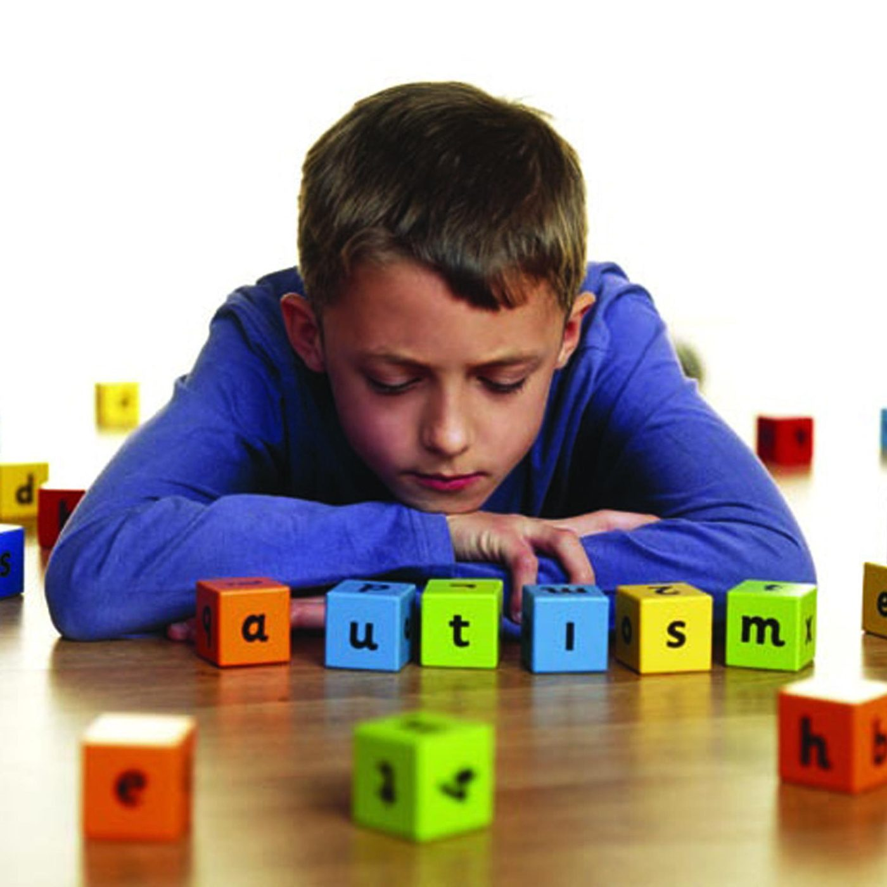
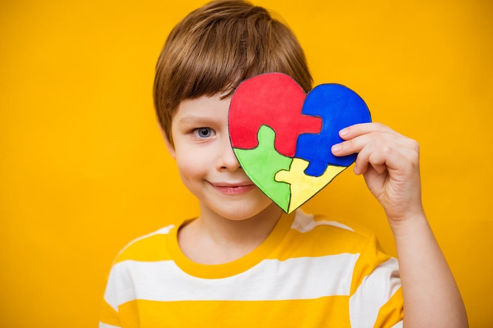

医学生物学成因
自闭症的医学生物学原因, 可能是遗传学因素, 免疫因素, 生化因素, 孕产期因素等. 自闭症的成因极为复杂, 有遗传易感性的个体是否发病, 取决于各种遗传因素和环境因素的相互作用, 很难在自闭症患者个体身上确认出一种共有的医学成因. 自闭症可能是因为许多不同的医学成因(如: 遗传, 病毒感染, 孕产期危险因素, 其他原因), 造成了特定脑结构或脑功能的损伤所致. 至于损伤的具体部位, 机制如何, 仍待进一步研究.
1/ 31
2025 年 4 月, 美国疾病控制与预防中心(CDC)数据显示, 每 31 名儿童中就有 1 名被诊断患有自闭症谱系障碍(ASD)
≈1%
全球范围内, 自闭症患病率约为 1%, 是增长最快的神经发育障碍之一
1000万 +
我国自闭症谱系障碍人群约 1000 万-1500 万, 发病率约 0.7%

认识自闭症
自闭症谱系障碍(ASD), 又称自闭谱系障碍, 自闭症谱系障碍, 是一类发生于儿童早期的神经发育障碍性疾病, 以社交沟通障碍, 兴趣狭隘, 行为重复刻板为主要特征. 该障碍通常起病于婴幼儿期, 临床表现存在显著异质性, 其中儿童自闭症是该谱系障碍中最为严重的类型, 严重影响儿童社会功能和生活质量. 2025年4月, 美国疾病控制与预防中心(CDC)发布的数据显示, 每31名儿童中就有1名被诊断患有自闭症谱系障碍(ASD), 全球范围内自闭症患病率约为1%.
成因
自闭症的病因仍是世界医学的未解难题, 可以排除的是自闭症与后天家庭教养有关. 该病男女发病率差异显著, 在中国男女患病率比例为6-9:1.
自闭症的医学生物学原因, 可能是遗传学因素, 免疫因素, 生化因素, 孕产期因素等. 自闭症的成因极为复杂, 有遗传易感性的个体是否发病, 取决于各种遗传因素和环境因素的相互作用, 很难在自闭症患者个体身上确认出一种共有的医学成因. 自闭症可能是因为许多不同的医学成因(如: 遗传, 病毒感染, 孕产期危险因素, 其他原因), 造成了特定脑结构或脑功能的损伤所致. 至于损伤的具体部位, 机制如何, 仍待进一步研究.
有学者将测量认知或情绪, 情感等心理功能的实验研究手段与探索脑区结构和功能的技术相结合, 进行自闭症成因的研究, 这种研究模式称为神经心理学模式.
有学者提出了生态学模式的自闭症观. 从医学生物学, 神经心理学角度来解释自闭症成因, 都倾向于将自闭症描述为患者个体内部的问题, 似乎自闭症只是一个静态的症状, 忽视了这种广泛性发育障碍与外部环境之间相互作用的动态发展过程. 而从生态学的角度看, 自闭症并不单纯是存在于个体内部的一种静态症状, 而是一个发展着的过程, 发生在个体与环境之间的相互作用中.
从中医辨证上, 自闭症属于肾虚, 先天不足, 发育五迟等范畴, 劳思, 抑郁, 恼怒, 伤感等因素还会使病情恶化. 肾主脑, 主骨, 开窍于耳, 其华在发; 在情志方面, 肾主恐. 肾先天不足, 必然反映到脑部的病变, 这一点与西医的医学生物学, 神经心理学和生态学分析结果完全一致(分析结果皆提示自闭症与个体的脑和神经的发育异常, 病变有关). 肾主骨, 肾虚则骨头发育异常, 往往从自闭症儿童的囟门闭合较晚, 头顶有明显的隆起, 出牙较晚, 牙齿小而异形等方面得以印证. 肾开窍于耳, 自闭症的孩子肾虚, 导致其听力不敏感, 视听不同步; 内耳的半规管和前庭出现问题, 则导致他们的平衡觉出现问题, 他们的时间知觉, 方位知觉, 运动知觉, 深度知觉, 距离知觉及其相互配合的能力很差; 个别自闭症的孩子在耳朵周围或耳道, 先天长有耳瘘, 拴马桩, 也是先天性肾虚对耳朵发育影响的表现. 其华在发, 由于肾虚, 自闭症孩子的头发大多表现为没有光华, 像枯草一样, 发质软黄稀疏. 还有的自闭症孩子由于肾虚造成弱视, 尿频, 尿床等. 肾主恐, 则体现自闭症儿童由于肾虚导致胆小, 经常无名恐惧, 没有自信等方面.
在中国的现状
根据"中国自闭症教育康复行业发展状况报告3"数据显示, 我国自闭症发病率约达0.7%, 约有1000万自闭症谱系障碍人群, 保守估计实际症状人数在1000万-1500万人之间. 以上海为例, 14岁以上患者人数约23万. 由于种种原因, 自闭症人群的教育问题长期未得到足够的认识. 随着社会关注度的提高和教育水平的发展, 目前, 轻度患儿可进入普通学校随班就读, 中度则进入特殊学校接受相应教育, 较重者只能留在家中由家长看护. 但"随班就读"政策仅限于义务教育阶段, 之后的中等职业教育, 特别是高等教育对于自闭症患儿几乎是空白. 随着大龄自闭症患儿人数的日益增多, 由此引发的社会问题将日益显现. 如何帮助大龄自闭症患儿更好地适应社会, 更好地融入社会, 让他们能够被社会接纳, 自食其力地生活, 这是一个亟待解决的重要民生问题.

干预与康复
自闭症目前尚无可以"治愈"的药物, 但早期识别与科学的干预训练能够显著改善孩子的社交, 语言与适应能力, 改善程度与干预开始的时间, 强度和连续性密切相关. 目前国际公认的做法是"三早"原则 -早发现, 早诊断, 早干预, 建议在2岁前完成筛查, 3岁前开始系统干预.
常用干预方法包括: 以行为分析为基础的应用行为分析(ABA), 以人际关系发展为目标的DIR/地板时光, 以结构化环境与视觉提示为核心的结构化教学(TEACCH), 以家长为干预实施者的家长培训模式, 以及针对沟通障碍的语言治疗, 针对感统失调的感觉统合训练和职业治疗等. 干预多采用多种方法组合使用的方式, 并根据孩子的能力基线定期评估, 动态调整方案. 药物一般不用于改善核心症状, 仅在伴随严重情绪行为问题或共病(如癫痫, 睡眠障碍)时, 由专科医生评估后对症使用.
查看干预康复详情一起做点什么
自闭症儿童需要的不是同情, 而是理解与接纳. 在日常生活中, 与他们相处可以记住几条简单原则:
用简短, 具体, 字面意义明确的语言交流, 一次只说一件事, 必要时配合图片或文字提示;
提前预告变化, 例如出门, 换教室, 换流程前先说明, 减少因不可预期带来的焦虑;
尊重他们对声音, 光线, 触碰的敏感, 不要强迫直视眼睛或拥抱, 先征得同意;
不打断他们专注的兴趣, 兴趣往往是他们与外界建立联系的入口;
发现异常发育信号时, 及时到儿童保健科或发育行为科进行专业评估.

"星星的孩子"只是与我们的频率不同, 而不是与我们无关. 多一份耐心, 少一句评判, 他们就有可能找到走进我们世界的那扇门.